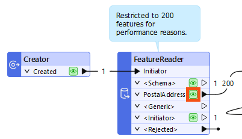
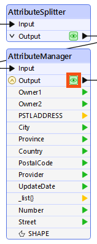
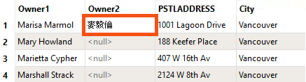
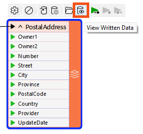

In software development, debugging a process after completion is called "post-mortem debugging"! We're trying to find out what caused a fatality.
After completing this lesson, you’ll be able to:
In this course, we’ll cover best practices for debugging your workspaces.
Even skilled FME users seldom produce new workspaces with zero defects. For that reason, all users must be aware of the debugging techniques available in FME.
Generally, debugging in FME consists of determining whether a problem has occurred and then tracking down the problem's source (for example, where it appears in the workspace). Once you have determined where a problem arises, you can investigate it.
There are various debugging techniques available in FME, and it's essential to use these in the correct order. For example, you shouldn't waste time randomly changing parameters and re-running the workspace when a simple log message explains the issue!
A logical order would be:
In software development, debugging a process after completion is called "post-mortem debugging"! We're trying to find out what caused a fatality.
FME logs contain a record of all stages and processes within a translation. The contents are vital for debugging purposes.
Log Message Types
Different message types appear in the log window, including:
The Log window is displayed as a table. The Transformer column shows you which transformer an error/information message is coming from. Click the hyperlinked transformer name to navigate to the canvas element producing the message. Using this link to identify where errors are occurring will make your debugging more efficient.
Besides writing the log to a text file (<workspace name>.log), FME also writes a spatial log:

The spatial log is a dataset of features (in FME Feature Store format) that the log mentions. FME generates a spatial log from <Rejected> Features when Navigator > Workspace Parameters > Reader/Writer Redirect is enabled or when a Logger has Feature Logging set to "Log and Record." You can open the FFS dataset within FME Data Inspector or the Visual Preview window in FME Workbench to inspect the features and identify any problems that caused FME to reject them.
The Translation Log window should be the first place you check when a translation finishes. It will tell you if there are any concerning errors or warnings.
Errors
If an ERROR occurs, FME will likely stop the translation. There will be red text in the log and some statements such as:
Program Terminating Translation FAILED.
There may be several ERROR messages, so scroll back up the log window and identify the first of these, which is the likely cause of the problem. For example, this message:
ERROR |Error connecting to PostgreSQL database(host='postgis.train.safe.com', port='5432', dbname='fmedata', user='fmedata', password='*'): 'FATAL: password authentication failed for user "fmedata" FATAL: password authentication failed for user "fmedata"
...is an obvious problem authenticating a database connection.
Warnings
Even when a translation succeeds, it's essential to check the log for the following comment:
Translation was SUCCESSFUL with X warning(s)
If there are any warnings (for example, if X > 0), use the search option to look for the word WARN. Any warning messages might significantly affect the quality of the output data.
Finding the Error's Source
Click the log hyperlink to look at the object on the canvas that produced the error.


Frank is working on a workspace that extracts address information from a File Geodatabase and writes it to a CSV with a new schema.
However, he notices that text attribute values using Chinese characters are rendered incorrectly in the output. For example, the written file renders the name "麥毅倫" as "???".
An encoding problem has occurred, but where? The fact that data appears incorrect in another application does not accurately indicate where the workspace introduced that problem.
In this scenario, Frank needs to use his debugging skills at critical stages to determine when the data last looked correct.
Text encoding is a complex topic. Here is some background context on text encoding in FME.
FME uses UTF-8 process encoding as of FME 2022.0. UTF-8 is the modern standard for text encoding because it supports all Unicode characters. Historically, FME on Windows relied on the system's default ANSI encoding, which varied depending on regional settings (e.g., Windows-1252 or Shift-JIS). In contrast, UNIX-based systems have long used UTF-8 by default.
As of Windows 10 (version 1903) and Windows Server 2019, FME now uses UTF-8 for encoding, provided the system is configured to do so. This change allows workspaces to be authored and executed across different locales with consistent and correct text output.
Frank opens the starting workspace (C:\FMEData\Workspaces\UseDataIntegrationBestPractices\use-the-log-to-identify-problems.fmw) in FME Workbench (2025.0.1 or later) and runs it to generate feature caches.
It's easy to assume source data is correct without checking it. Frank knows that he should inspect the source data in its native application to confirm its accuracy, if possible:

If the data is incorrect at the source, there is little chance the translation output will be correct. However, his source data displays properly in ArcGIS, so the translation should work.
If you are taking a Safe Software-hosted training course, we do not have Esri ArcCatalog or ArcGIS Pro installed on the machines, so you won't be able to inspect the data in the source application.
Seeing that the source data is correct in its native application, Frank next inspects it using FME.
He inspects the source data in Visual Preview, clicking the FeatureReader's PostalAddress cache:

He knows that one of the owners on a problem feature is Marisa Marmol, so he types "Marmol" into the search bar at the bottom of Visual Preview. The problem feature appears in Table view:

Here, read from the source data, the encoding appears correct: OWNERNM2 uses Chinese characters.
If the data were incorrect at this point, then the process of reading the data with FME is at fault. But the data is correct, so he must continue to diagnose the problem.
If you need to find the source of your problem, start by reading. Any issues you create during reading will likely appear throughout the rest of your workspace.
Now, he should inspect the data between transformation and writing.
He inspects the final cache before writing, the AttributeManager's Output cache:

Again, the Chinese characters are correctly displayed for the Marisa Marmol feature:

If Visual Preview showed � characters at this point, Frank could assume that the problem occurs in data transformation before writing. He could use feature caching to inspect each step to narrow down exactly where the problem appears.
However, the data in our example is still correct when entering the writer, so we should test the output dataset next.
If the data is correct before writing, then writing might be the problem.
Next, Frank inspects the written CSV data by clicking the PostalAddress writer feature type and clicking the View Written Data button:

This step will show the data as FME wrote it (and, of course, read it back). If the data is incorrect here, then the problem will have likely occurred during the writing of the data.
He searches for Marmol again and finds the problem feature. This time, the Chinese characters in the Owner2 attribute are rendered as unknown characters ???:

Because Visual Preview shows � characters at this point, FME incorrectly encoded the data during writing.
Another check to make is to open the data in a text editor. It will not be possible to do this for every dataset (binary files or databases, for example). However, text-based files can provide proof if the data is correct in the destination.
Frank opens the output in Notepad and sees the ??? characters, indicating an encoding problem on writing:

This step confirms that the problem occurs when writing the data. However, this might only sometimes be the case.
Your machine might show an empty string
,,instead of,???,.
If FME (and a text editor) can display the output data, and there are still display problems, then the intended application is not interpreting the data correctly.
That's not the case here, since we've confirmed the issue occurs when FME writes the data. But just to fully check the issue end-to-end, Frank opens the output dataset in the destination application, Microsoft Excel in this case. If FME can read the data correctly, and it looks correct in a text editor, then the problem is more likely to be with how the end application interprets the data:

If you are taking a Safe Software-sponsored training course, Microsoft Excel is not installed on your machine. You can open the data with Open Office Calc or skip this step.
That would be particularly true if the format were non-native to that application, for example, reading a Geodatabase outside of an Esri product.
These techniques narrow down where an error might have occurred but don't always specify the cause. For example, incorrect output could mean that FME has a limitation in that writer. The workspace author has set an incorrect parameter, or one application uses a different default encoding than another.
These steps confirm there is an issue. Next, Frank will dig into the problem using the Translation Log.